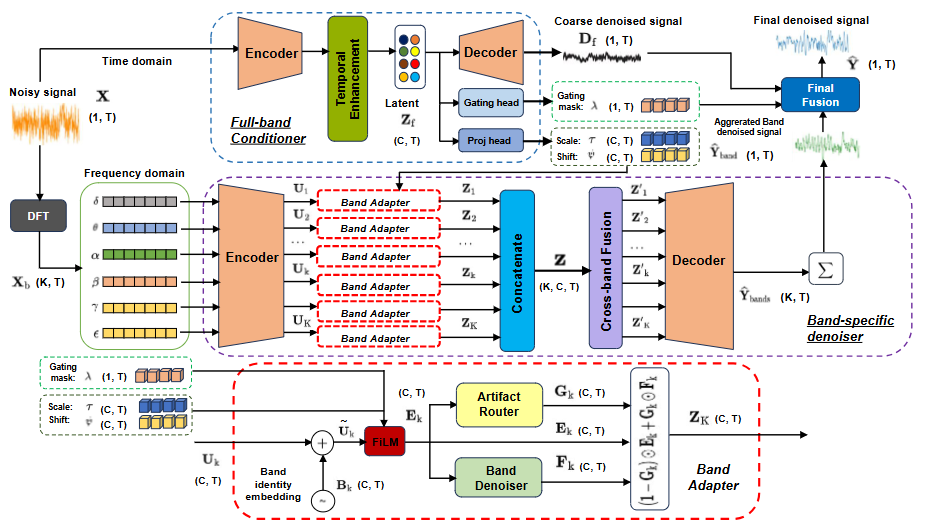
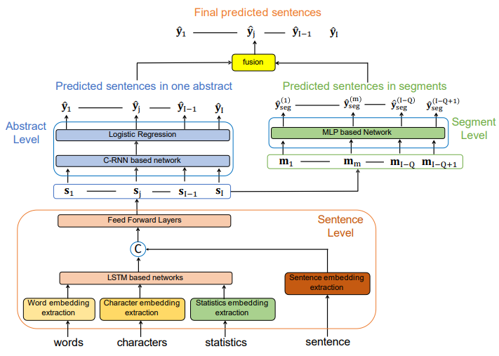
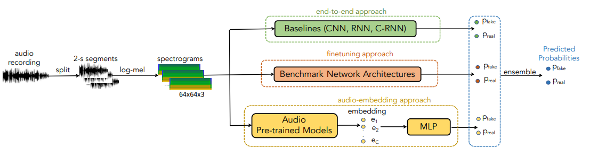
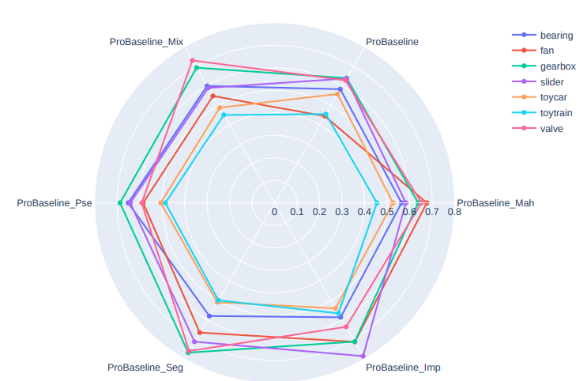
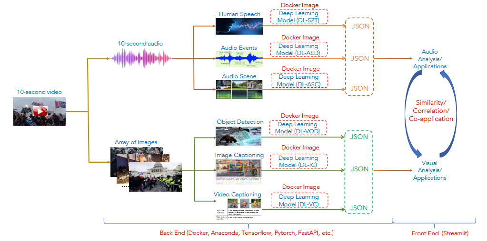

arXiv
BandRouteNet: An Adaptive Band Routing Neural Network for EEG Artifact Removal
Phat Lam
A low-complexity EEG artifact removal framework based on adaptive band-frequency routing.
Research

Phat Lam
A low-complexity EEG artifact removal framework based on adaptive band-frequency routing.

Phat Lam, Lam Pham, Dat Tran, Alexander Schindler, Silvia Poletti, Marcel Hasenbalg, David Fischinger, Martin Boyer
An extensible LLM-powered multimodal audio assistant for comprehensive audio analysis in surveillance applications.

Phat Lam, Lam Pham, Truong Nguyen, Dat Ngo, Thinh Pham, Tin Nguyen, Loi Khanh Nguyen, Alexander Schindler
An unsupervised multilingual speaker diarization system that uses Whisper-based speaker embeddings and sparse autoencoder mixtures for speaker clustering.

Phat Lam, Lam Pham, Tin Nguyen, Hieu Tang, Michael Seidl, Medina Andresel, Alexander Schindler
A multi-branch LSTM-based framework that learns comprehensive sentence representations and contextual dependencies for sequential sentence classification in medical abstracts.

Lam Pham, Dat Tran, Phat Lam, Florian Skopik, Alexander Schindler, Silvia Poletti, David Fischinger, Martin Boyer
A low-complexity depthwise-inception network for deepfake speech detection, trained with a contrastive strategy.

Lam Pham*, Phat Lam*, Dat Tran, Hieu Tang, Tin Nguyen, Alexander Schindler, Florian Skopik, Alexander Polonsky, Hai Canh Vu
A comprehensive survey and critical analysis of deepfake speech detection, covering benchmark datasets, challenge competitions, deep-learning techniques, experimental validation, and promising future research directions.

Lam Pham*, Phat Lam*, Truong Nguyen, Huyen Nguyen, Alexander Schindler
Developed an ensemble deep-learning framework for deepfake audio detection that combines diverse spectrogram features, CNN/transfer-learning models, and pretrained audio embeddings.

Tin Nguyen, Hieu Tang, Lam Pham, Phat Lam , Dat Ngo, Canh Vu, Alexander Schindler, Son Phan, Truong Nguyen
Investigated the impact of frequency-band selection on deep learning–based acoustic anomaly detection, showing that machine-specific spectral bands can substantially improve detection performance across industrial machine types.

Lam Pham, Tin Nguyen, Phat Lam, Hieu Tang, Alexander Schindler
Developed a flexible, Dockerized multimodal toolchain that integrates deep-learning models for comprehensive audio–video analysis, including content summarization, clustering, and riot or violent-context detection.